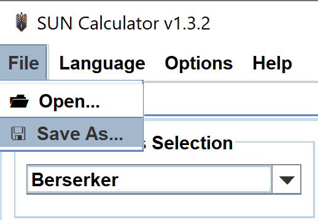
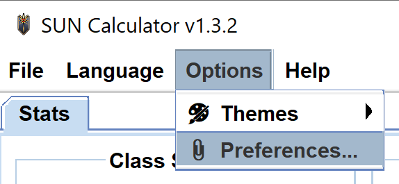

Understanding the Basics
Contents
❈ Open saved builds
In order to open a saved build, the user must have a saved file containing information about a character. This tutorial will use a file called "Saved_Berserker_Build.txt". You can download the zip that contains the text file from Valiant's website. Download: SUN Calc_Tutorial_Berserker Build.zip.
To open a saved build from a text file, the user needs to go to File at the top left and click "Open...".
Another window will open and prompt the user to select a file. In this example, the tutorial will open a file called "Saved_Berserker_Build.txt" from the Desktop.

Click "Open" once the user has selected a file. The information inside the file will be loaded in the Calculator.

❈ Save an in-progress build
To save a build the user must have selected a class from the drop down bar inside the "Class Selection" section before continuing on in this tutorial. To figure out how to select a class, please visit the "Create Character Builds" tutorial.
To save a build, the user must select File in the top left corner and click "Save As...".

Another window will open and prompt the user to name the file and select a directory to save the file. If the user wishes to replace an existing file, then go to the directory the file exists and click the text file avaliable. In this example, the tutorial will save the file as "Saved_Beserker_Build".

Click Save and the Calculator will notify the user that the build has been saved into the specified file in the "System Messages" box.

❈ Change the language and theme
NOTE: The application can be changed to start up in a particular language or theme - to do this, the user needs to read the change the user's preferences section of this tutorial.
To change the language, the user must click Language in the menu bar at the top and select a language in the drop down menu.

To change the theme, the user must click Options in the menu bar at the top, scroll over Themes, and click a theme in the side menu.

❈ Change the user's preferences
To change the application's start up preferences, click Options in the menu bar at the top and click "Preferences..." in the drop down menu.

A new window will popup and in this window the user can change any of the preferences. Click "Apply" in the bottom right corner of the window and application will save and adjust it's settings.

❈ Contact support
Click "Help" in the menu bar at the top of the application window. In the drop down menu, click "Contact Support...". This will bring the user to Valiant Guild's main website.

The website will launch in the default browser on the user's computer. The website will look like the image below. Please fill out the form and click "Submit".
❈ Manually check for updates
Click "Help" in the menu bar at the top of the application and click "Check for Updates..." in the drop down menu.
If there is an update needed, a popup window will appear and prompt the user to either click "Yes" or "No". Clicking "Yes" will cause the application to eventully close after starting the updater. Once the application is finished updating, then the user will need to manually restart the application.

To comfirm whether the application is up to date, the user can check the "System Messages" box. The picture below displays what messages to expect.